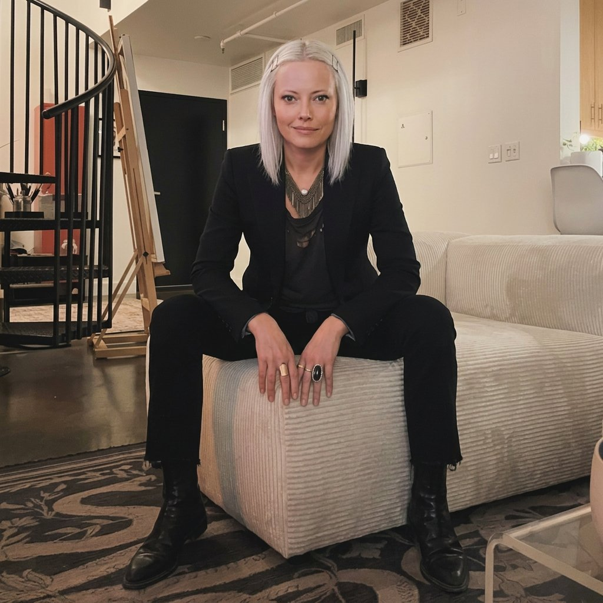

Lead product designer with 13+ years shipping complex B2B and consumer products across SaaS, fintech, hardware-adjacent, and e-commerce, from zero-to-one discovery through eng-ready delivery.

I operate end-to-end and across teams: shaping strategy with stakeholders, running enterprise research, stewarding design systems, and partnering closely with engineering to hit milestones without compromising craft.
I came up designing for expert users with no patience for friction: coaches reviewing film at 2am, ops managers who can't afford a bad day. That standard travels with me. I'm at my best on a diverse portfolio of genuinely hard problems, with a team that values transparency, deep work, and doing good work for good reasons.
Own end-to-end design for the Engagement team: the smart-banner SDK, Link Manager, and Bulk Link Creation.
Designed for a global sports video and analytics platform used by coaches and athletes across pro, collegiate, and youth: expert users with high stakes.
Designed enterprise software for building-materials distributors: data-heavy, workflow-dependent interfaces where understanding the business was a prerequisite to designing anything.
Designed mobile and web interfaces for an ultrasonic data-transmission platform, a technically novel, hardware-adjacent product where the core challenge was making invisible behavior feel trustworthy and legible.
End-to-end product design, UX research, interaction design, information architecture, visual design, design systems, prototyping, and design critique. Comfortable owning ambiguous, zero-to-one problems and carrying them through to polished, shipped work.
Discovery & synthesis, user interviews, journey mapping, wireframing, high-fidelity design, and eng-ready specs. Async collaboration and ticket writing from initiative to subtask level in Jira and Linear. Quarterly planning and strategy as part of a longer-term roadmap.
Cross-functional partnership with engineering, product, and stakeholders; client-facing presentation; and design–dev handoff that keeps craft intact through implementation.
Figma, Figma Make, FigJam, Claude Code, Notion, Linear, Miro, Jira, Loom.